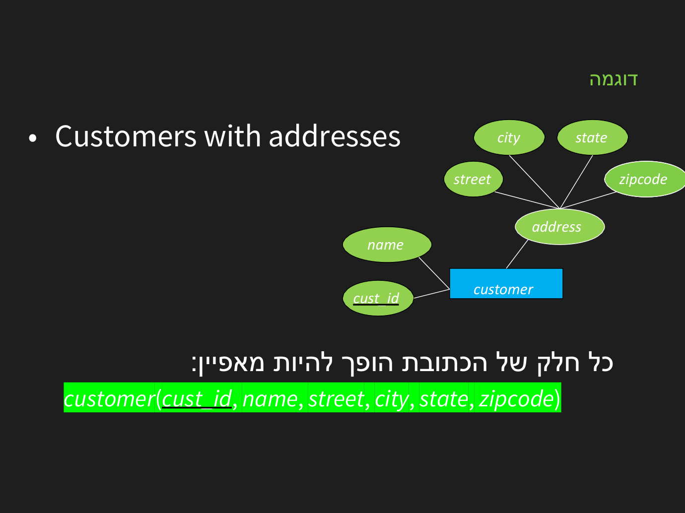
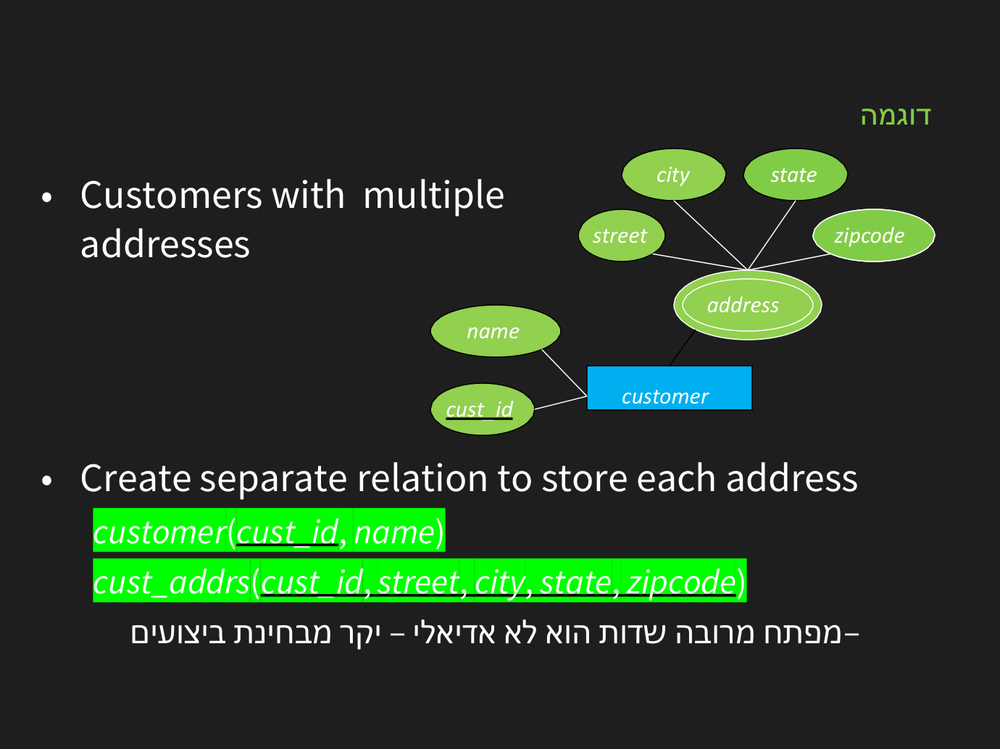
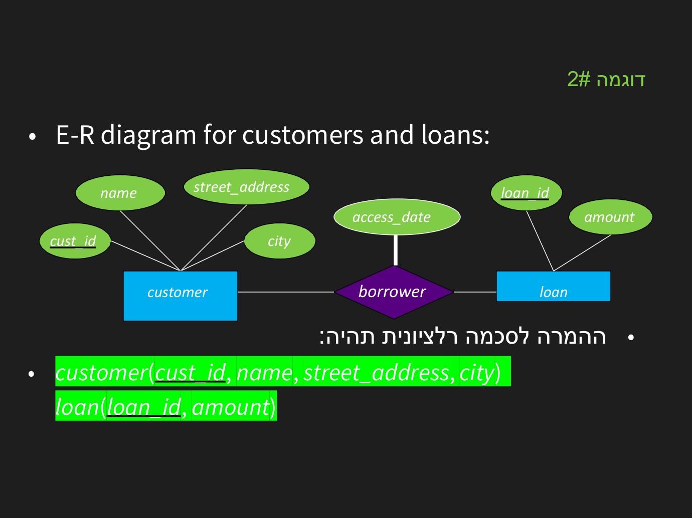
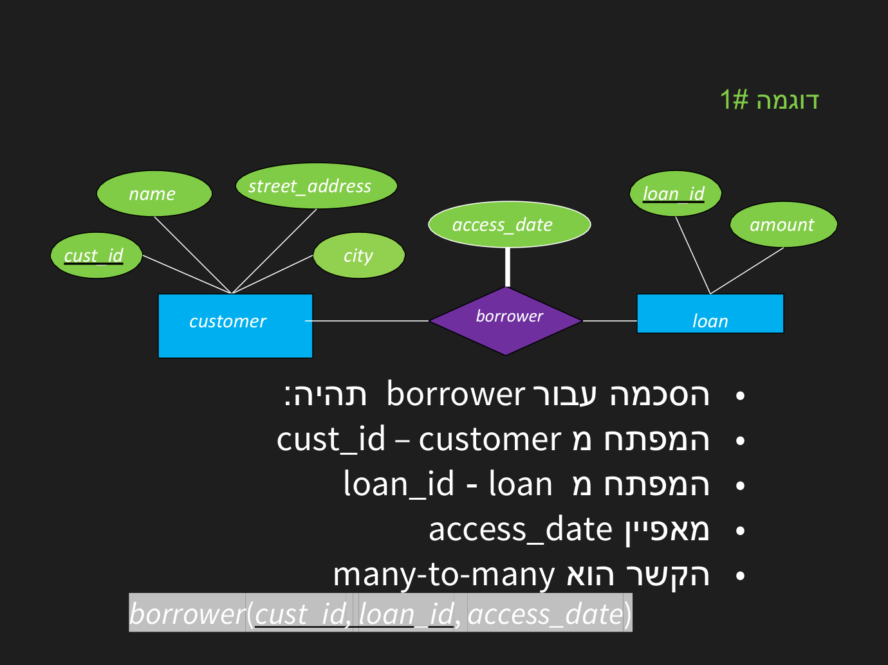

המרת ER למודל רלציוני
⏱ זמן משוער: 35 דק'
מקור: ER_to_RM.pdf
הכלל הבסיסי: ישות → טבלה
כל ישות חזקה הופכת לטבלה, כשהתכונות הפשוטות הן העמודות והמפתח הופך למפתח ראשי. תכונה מורכבת מתפרקת לעמודותיה; תכונה רב-ערכית עוברת לטבלה נפרדת עם מפתח זר חזרה.


דוגמה מלאה מהמצגת — ER של לקוחות והלוואות, והסכמה הרלציונית שמתקבלת:

-- תבנית: כל ישות → טבלה; המפתח בקו תחתון → PRIMARY KEY
customer(cust_id, name, street_address, city)
loan(loan_id, amount)מקור: ER_to_RM.pdf
קשרים לפי קרדינליות
- 1:N — שמים את מפתח הצד ה«אחד» כמפתח זר בטבלת הצד ה«רבים». (למשל dept_id בתוך employee.)
- 1:1 — מפתח זר באחד הצדדים (עדיף בצד עם ההשתתפות המלאה), או מיזוג לטבלה אחת.
- N:M — יוצרים טבלת קשר חדשה עם שני מפתחות זרים (לשתי הישויות); הצירוף שלהם הוא המפתח הראשי, וגם תכונות הקשר יושבות שם.

-- הקשר N:M מהדיאגרמה למעלה הופך לטבלה שלישית:
borrower(cust_id, loan_id, access_date)
-- PRIMARY KEY (cust_id, loan_id)
-- FOREIGN KEY cust_id → customer, FOREIGN KEY loan_id → loan
-- ולעומת זאת קשר 1:N (מחלקה–עובדים) לא מקבל טבלה:
employee(emp_id, name, dept_id) -- המפתח הזר בצד ה"רבים"
department(dept_id, dept_name)מקור: ER_to_RM.pdf
כלל מיקום המפתח הזר
מקור: ER_to_RM.pdf
ישות חלשה → טבלה
ישות חלשה הופכת לטבלה שהמפתח הראשי שלה הוא צירוף של המפתח החלקי (המבחין) שלה עם המפתח הזר של הישות החזקה. לרוב מוסיפים ON DELETE CASCADE כדי שמחיקת האב תמחק את התלויים.
CREATE TABLE dependent (
emp_id INT, -- המפתח הזר של הישות החזקה
dep_name VARCHAR(40), -- המפתח החלקי (המבחין)
birth_date DATE,
PRIMARY KEY (emp_id, dep_name), -- צירוף!
FOREIGN KEY (emp_id) REFERENCES employee(emp_id)
ON DELETE CASCADE -- העובד נמחק → התלויים נמחקים
);מקור: ER_to_RM.pdf
בדיקה עצמית
קשר 1:N בין Department ל-Employee ממופה כך:
קשר N:M בין Student ל-Course ממופה כך:
היכן יושב המפתח הזר בקשר 1:N?
תכונה רב-ערכית של ישות ממופה כך:
מהו המפתח הראשי של טבלת הקשר ב-N:M?